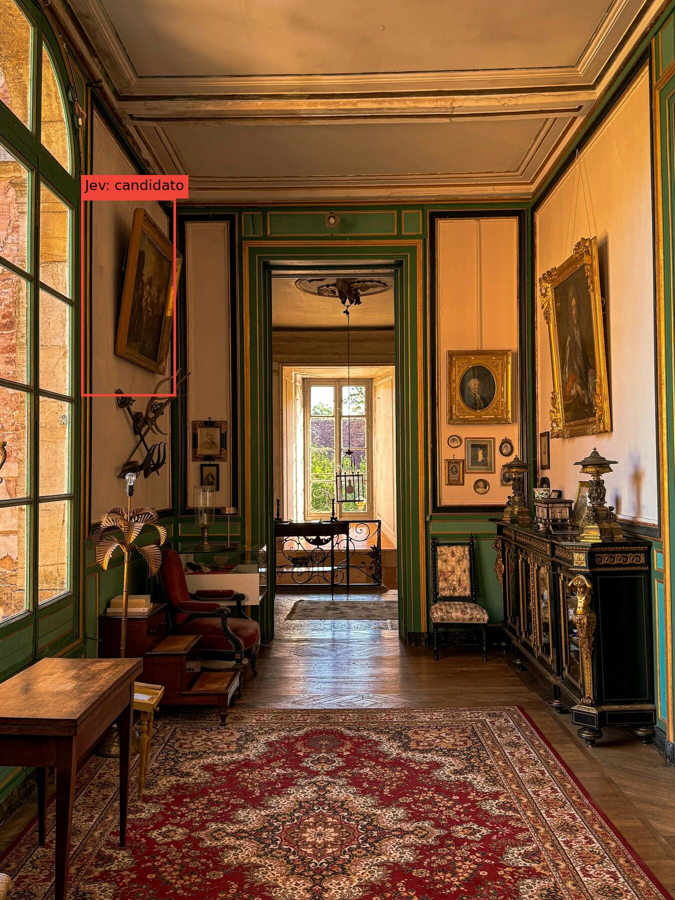
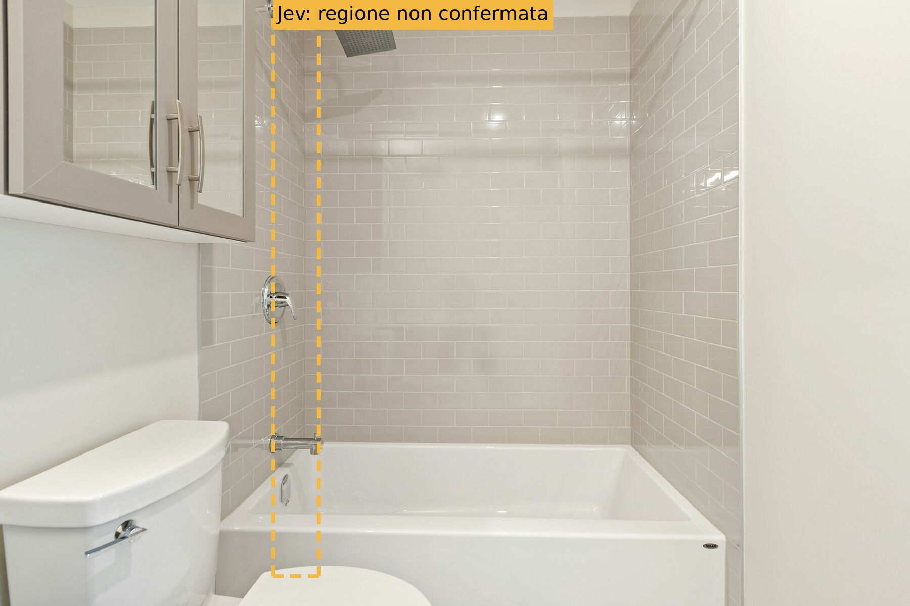

Jev · risultati reali sulle foto del pitch
Due chiamate live a jev-1.14.0, con la stessa domanda generale e lo stesso adattatore del backend.
Rosso continuo = candidato incluso dal gate di presenza del backend (punteggio ≥ 0.75). Il gate attuale non controlla la confidenza della box, riportata sotto ogni foto. Giallo tratteggiato = regione grezza, non accettata. Il punteggio è l'output Noul del modello, non una probabilità di caduta. Ogni richiesta restituisce una sola regione e nessun nome dell'oggetto; i nove hotspot illustrativi della presentazione non sono stati inviati al modello.
Corridoio

{
"presence_score": 0.9,
"backend_presence": "present",
"normalized_box": [
0.12,
0.22,
0.26,
0.44
],
"box_confidence": 0.04,
"model": "jev-1.14.0",
"elapsed_seconds": 1.481,
"usage": {
"input_tokens": 5084,
"output_tokens": 40
}
}Risposta API completa e domande · Immagine inviata · Photo by Thomas Würth on Unsplash
Bagno

{
"presence_score": 0.7,
"backend_presence": "unknown",
"normalized_box": [
0.3,
0.03,
0.35,
0.95
],
"box_confidence": 0.06,
"model": "jev-1.14.0",
"elapsed_seconds": 0.454,
"usage": {
"input_tokens": 4637,
"output_tokens": 40
}
}Risposta API completa e domande · Immagine inviata · Photo by Point3D Commercial Imaging Ltd. on Unsplash